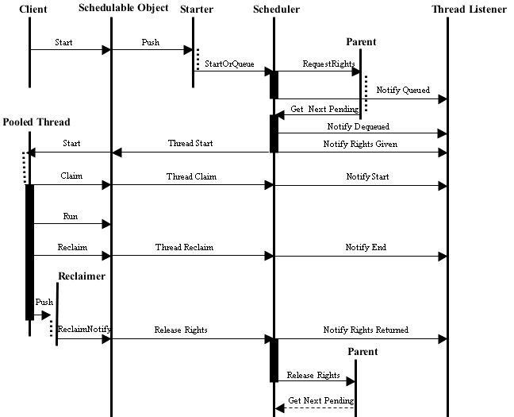

The overall structure of the thread service system is a tree that tends to mimic the tree of Containers in COUGAAR. Each level of this tree includes its own trio of thread services which are directly responsible for the Threads used at that level of the hierarchy and indirectly responsible for its children.
Each level other than the root requests run-rights from its parent and only runs as many java Threads as it has rights. With the default scheduler, all requests for run-rights ultimately propogate to the root service, which keeps a count of running threads and refuses to allocate further rights if that count hits a given maximum (30 by default). As each Thread finishes, its run-right is released, again propagating to the root service. The released right will then be made available to the children, using a layer-specific algorithm. Each layer can (a) consume the right itself (if the given layer has queued threads); (b) recursively give it to a child; or (c) decline to accept it.
The direct control of local threads at any given level is handled by a Scheduler. If a thread at that level wants to run, the Scheduler is asked for a right. If a right is available a true java Thread will be run; if not, the request will be queued until sufficient rights are available. The order in which items are removed from the queue depends on a Comparator, which by default uses time (i.e., fifo) but which at any time can be replaced by an arbitrarily complex and dynamic Comparator via the ThreadControlService. Schedulers use a RightsSelector to determine the possible re-allocation of a released run-right. The default RightsSelector uses a round-robin algorithm, which provides fair scheduling between the layer's own queued requests and its children. The RightsSelector can be replaced at any time via the ThreadControlService.
The hierarchy skeleton is represented by a set of TreeNodes. The TreeNode at any given level holds pointers to the level's scheduler, selector, parent node and child nodes.
Any Container whose components wish to use the thread services should provide those services locally, using ThreadServiceProvider. This will ensure that the thread service hierarchy maps properly into the Component hierarchy.
|  |